牛魔王、吹笛人和让子弹飞
昨天杜小姐吐槽：能不能写点我能看得懂的文章啊？好，今天就写一篇这样子的文章。
丰富的故事，送给同样内心丰富的你。
先讲两个看来的故事。
牛魔王
西游记有很多解读版本，包括其实是六耳猕猴打死孙悟空啦，唐僧前几世都被沙僧吃掉啦。一方面来源于作者草灰蛇线般的铺垫，一方面来源于故事的宏大背景，每一个细节都有可能反映当时的一种生活习惯、一种思潮，这也是四大名著最迷人的地方。
今天单聊牛魔王这事，牛魔王是谁？齐天大圣的拜把子兄弟，娶了铁扇公主，生了个红孩儿，而这个红孩儿还会三昧真火。
这就要了亲命了，你牛魔王的老婆，拿着太上老君的宝贝芭蕉扇作威作福，你的儿子，天生就会把齐天大圣搞得死去活来的三昧真火，这三昧真火可也是在太上老君的兜率宫里。牛魔王呀，你这头上，可当真有点绿呀！
其实这个事吧，不一定是太上老君的锅。
西游记里潜在的内容是佛教和道教的对抗，西游之旅，就是传教之旅。首先我们得看一下，牛魔王是谁的人。老牛的老婆和太上老君有说不清道不明的关系，可是儿子当了观音的善财童子，那老牛信谁呢？
这得看看老牛的弟弟信谁。（什么，牛魔王还有个弟弟？）
是的，老牛的弟弟，大家也应该很熟。万晓利有一首《女儿情》，讲的是女儿国国王和唐僧的故事，老牛的弟弟，就是女儿国故事里，霸占落胎泉的那个如意真仙。真仙，显然是个道教人士。所以老牛，恐怕被收服之前，也是信道教的。
而且这个故事里，有个很重要的细节，牛魔王的弟弟，是个人。（这里做了一个假设，假设如意真仙是牛魔王的亲弟弟，牛魔王擅长交际，孙悟空也是他的兄弟。）如果如意真仙是牛魔王的亲弟弟的话，那么牛魔王本来不一定是个牛了，他可能是人变过来的，所以和铁扇公主生出红孩儿就没什么问题了。
铁扇公主这个名字也值得细究一下，铁扇指的是芭蕉扇，公主又是哪里来的呢，谁家的女孩子又可以当公主呢？而且这个公主这么有本事，生出红孩儿这种法力高强的孩子？
亲爱的男同胞们，刚刚过去的七夕，你们肉疼么？
也许，当年的牛郎织女，就是现在的牛魔王和铁扇公主。
很多年以后，王母娘娘也心软了，牛魔王和铁扇公主不用每年七夕相聚了，成了天天见面的夫妻。但是王母娘娘为了出心中的恶气，将牛郎变成了牛的样子，于是牛郎就成了牛魔王，织女也改名换姓，叫铁扇公主了。这也不难解释，为什么铁扇公主会有芭蕉扇，红孩儿会三昧真火了，本来就是一家人嘛！
不过一想到，牛郎织女结婚后，牛魔王也要搞婚外情，我就想笑。
吹笛人
《哈默林的花衣吹笛人》，名字虽然听着陌生，但是大部分人小时候应该听说过这个故事。
八百年前的德国小城，出现鼠患，全城束手无策，只好打算弃城逃走。这时，出现了斑衣吹笛人。 他服装的花色古怪、腰上插着笛子，他说他能清除老鼠，但要收一笔酬劳。小城的居民说，只要能赶走老鼠，付他五十倍的酬劳都行。 斑衣吹笛人拿出笛子，吹起轻柔曲调，所有老鼠纷纷从沟里房里柜下床底跑出来，跟在吹笛人的后面。 吹笛人走到河边，继续吹着笛子，老鼠如痴如醉一批接着一批跳进河里，全部被河水冲走了。 居民高兴得要命，但吹笛人索取酬劳的时候，居民却说没钱可付。 吹笛人默默离开小城。当天晚上，月亮高挂天空，家家安睡，到了半夜，小城的空中忽然响起了清澈的笛声。笛声飘动着，每一家的小孩都从家里跑到路上，跟在斑衣吹笛人的身后。 他一边吹着笛，一边往山上走去，所有小孩跟在他身后，走着走着，月光渐渐被云挡住，吹笛人和小孩越走越远，最后全部消失在山里面。 全城，只有一个柱拐扙的小孩，因为走路速度追不上队伍，最后一个人哭着回到城里，哭着跟所有大人说，他追不上其他的小朋友，大家都走了，把他一个抛下。
这个故事很简单，看起来就是个童话故事。然而，很多童话故事背后却是令人不寒而栗的真相，这个故事也是其中之一。
这个故事精准地记载了欧洲中世纪一个城市发生的黑死病事件，也就是鼠疫，鼠疫发生后，老鼠大量死亡，随后被老鼠或者蚊虫叮咬的人，都会死亡。黑死病对于整个欧洲都是影响力巨大的，由于治病不力，教会和皇权受到了很大的挑战，最后促成了文艺复兴运动。
所以故事里的吹笛人，压根不是什么人，就是鼠疫，他的到来，不但带走了大量老鼠，同时让大量小孩死亡。
而黑死病，促使了西方医学的进步，包括理论、技术和器械上的进步。值得一提的是， 铁鸦面具就是为了应对黑死病而出现的。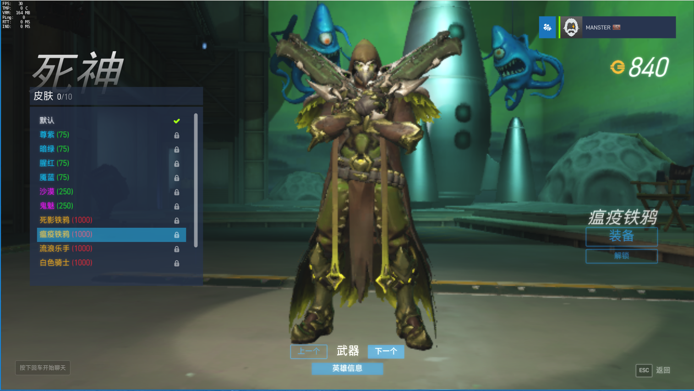
最后，上个世纪黑死病也在中国东北出现过，感谢伍连德医生，国士无双。
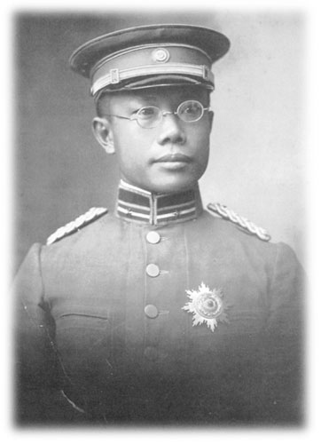
让子弹飞
姜文这个人吧，太自恋，而且是因为自己太聪明，所以自恋。第一次看《让子弹飞》时，也不觉得故事多精彩，只是觉得三大影帝飙戏太酷了，这么多年来，我每年总会重温一次《让子弹飞》，发现随着见识的增长，也越来越看得懂这部电影了。《太阳照常升起》是姜文拍给自己看的，《让子弹飞》是他拍给我们看的。
我是把这片子当成政治隐喻片看的，我看到的《让子弹飞》就是一场革命的故事，而且电影里姜文很露骨地表示，革命尚未成功，同志再努力，也无济于事。
这片子里有很多台词耐人寻味。
1、首先这片子得看川话版，其次你得会打麻将。
张麻子团队叫麻匪，标志是头上戴的筒子。“筒子”和“同志”，四川话里这是一个发音。
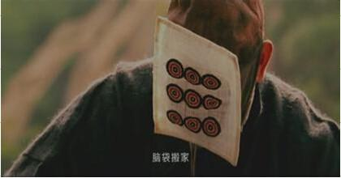
所以坤哥你叫“胡万”，你这不就是找死么？
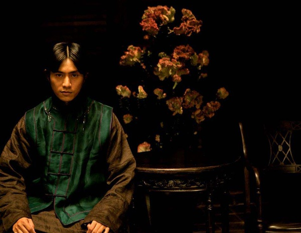
2、
同样是二把手，同样是死在空中，林庄公，死不瞑目。
3、
害死六子的凉粉，和传说中害死接班人的那碗蛋炒饭，是不是一样呢？所谓杀人诛心，六子死了，就算他只吃了一碗粉，别人也相信他吃了两碗粉。
4、

马拉列车，简称马x列，那对红旗能不能再鲜艳一点？
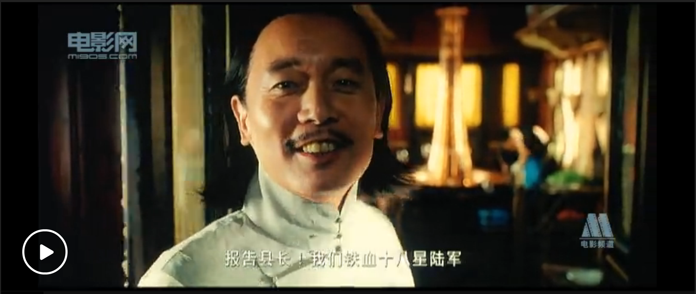
仔细看后面，冯小刚饰演的汤师爷也不是个好东西，趁着县长说话，调戏夫人。
5、
这个镜头，我最开始没懂什么意思，当再次看到张麻子说出那句台词：“姑娘，你这样，更好看”时，我了然了。
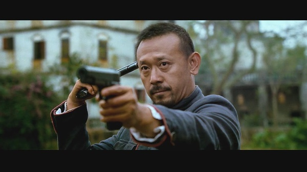
当花姐第一次做出这个动作时，她加入了麻匪团队。当完成革命后，她和老三要去上海时，姜文对她做了这个动作，告诉她，这样更美。
这个动作是个象征，当做出这个动作时，你就可以加入革命队伍。一手指着别人，是在革别人的命，一手指着自己，是在革自己的命。这是真正的革命者在做的事情。
革命完成后，花姐不再是一个革命者，所以张麻子说：你当革命者的时候，更美。
6、
老汤说，他有两档子事骗了张麻子。
第一档子事：钻石的事，经过一番周折，钻石最终还是回到了黄四郎手中。
然而汤师爷也估计张麻子猜到了这件事，所以才说：先说说第二档子事吧。
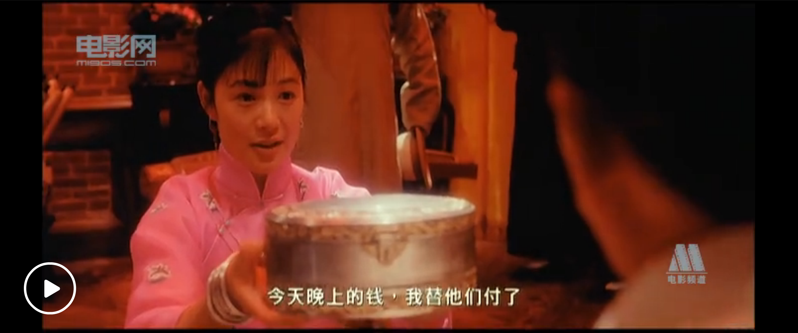
第二档子事：吹口哨的事，汤师爷不是瞎吹，而是真的想吹死张麻子。

整个故事里，汤师爷不断融入革命队伍，最终将革命队伍的大部分人带走。
7、
黄四郎是何许人？
黄四郎说，六子、夫人、老汤、老二，四条人命换他五代家业。这说明他家成豪绅，已有多年。
然而黄四郎没那么简单。 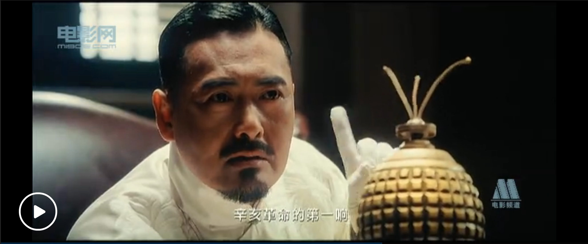
黄四郎不仅是传统豪绅，同时也是辛亥革命的参与者、亲历者，最后也成为了辛亥革命的受益者，享受革命成果。
所以，当革命者张麻子到鹅城时，他觉得如此熟悉。
张麻子：那么彼时彼刻？
黄四郎：恰如此时此刻。
黄四郎以为，张麻子的革命和上一场革命，是一回事，所以他输了。
汤师爷说：各大家族出钱，逼迫百姓缴税。事成之后，豪绅的钱如数奉还，剩下的三七分成。
想想徐小平和真格基金投资的那一大票公司，想想向华强和向太太投资的那堆垃圾电影，《让子弹飞》里讲的事情，在现实生活中一样发生。
8、
这句台词，我也看了很久才明白。
张麻子：你觉得你对我重要，还是钱对我重要？ 黄四郎：我重要。 张麻子：你再想想？ 黄四郎：难不成是钱重要？ 张麻子：你再好好想想。 黄四郎：那还是我重要。 张麻子：你和钱对我都不重要，没有你，对我很重要。
这就是《让子弹飞》故事的核心，张麻子跟随过松坡将军，也就是蔡锷。辛亥革命的结果是：推翻了满清政府，然而北洋政府窃取了革命果实，中华大地，还是一片焦土。
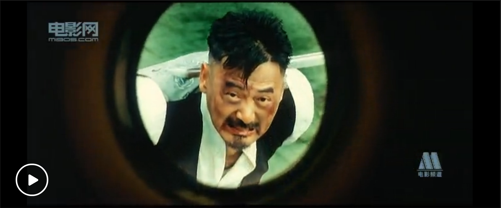
因此张麻子砍了黄四郎的替身，并没有完成革命的目的。
再回到那番话，上一场革命里，皇权被消灭，但是皇权的基础没有被消灭，黄四郎们仍然在鱼肉百姓，辛亥革命之所以能够消灭皇权，在于他们和黄四郎们合作了，辛亥革命之所以失败，在于革命并没有消灭黄四郎们。
所以黄四郎认为，张麻子是要取代他，做革命的受益者。
然而张麻子的革命理念最开始就说明白了：
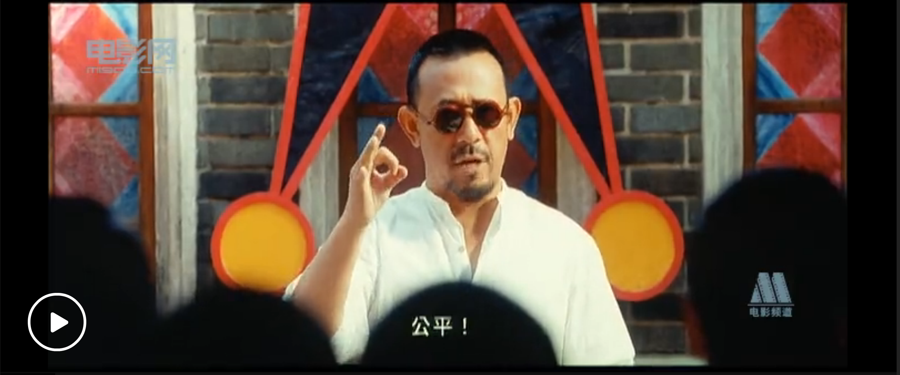
如果黄四郎继续存在，那么公平就无从实现。
所以没有黄四郎，对张麻子很重要。
9、
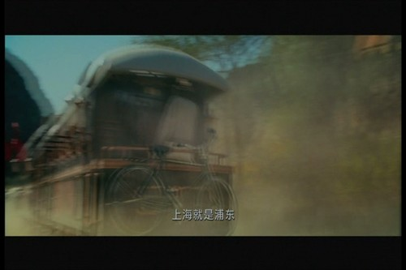
电影的结尾，姜文怕观众们看不懂，更加直白地表露了自己的观点：
花姐：上海在哪里啊？ 老三：上海就是浦东，浦东就是上海。
跟片头一样的马拉列车呼啸而过，张麻子看到车背后，有个汤师爷的背影，于是打马向前，背景响起了和片头一样的音乐，李叔同的《送别》。
为了大家看得懂，我放上了下面这张图：
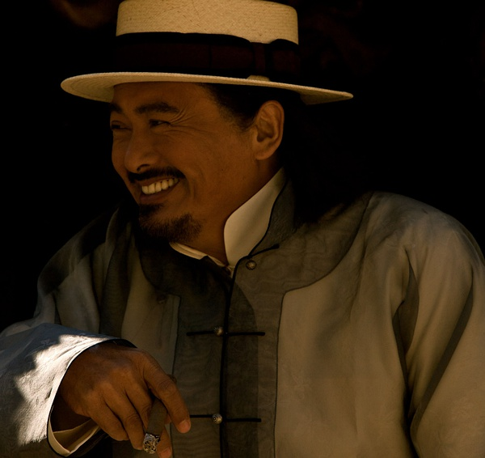
很多年前，黄炎培问毛：GC党执政，如何能够跳出历史周期律。
毛讲：我们已经找到新路，我们能跳出这周期率。这条新路，就是民主。只有让人民来监督政府，政府才不敢松懈。只有人人起来负责，才不会人亡政息。
上海自清朝末年以来就成了中国的钱袋子，北洋政府、民国政府、日本、英美列强都把上海视为不可动摇的商业中心，之所以设立外滩，是因为外滩在列强舰船的火炮射程范围内。（讲个题外话，香港的兴起，和上海对外关闭有很大的关系，而香港近年的衰落，对应的却是上海的蒸蒸日上。）
浦东，在电影发生的年代，还是外滩对岸的乡村。那这番话从何而来？
新的上海，取代了旧的上海，新人换了旧人。革命以前是马拉列车，革命以后，依旧是马拉列车。张麻子的革命只是一厢情愿，革命过后，汤师爷没有死，黄四郎没有死。黄四郎穿上了汤师爷的衣服，跟着胜利的革命者们，前往了新的年代。
只有真正的革命者，被时代所抛下。
再过很多年，也许很多人不会再记得，东方的这个鹅城里，党曰Gong Chan，国曰共和的原因。
再次跪舔姜文和李安，还有这些讲故事的人，他们拍的波澜壮阔的故事表面下，有着另一层风景。
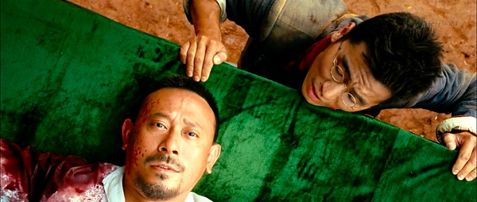